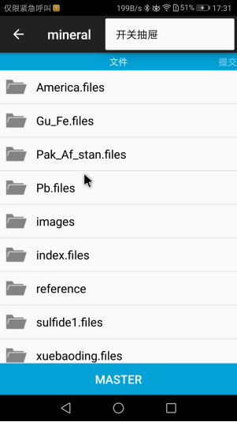

上篇介绍了用 WPS 编辑静态网页，然后发布在Gitee上的操作：git_wps_tutorial.html ， 我在使用过程中发现一个问题，就是许多页面素材图片来自于手机相机，或手机截屏，而手机图片需要同步到GNU/Linux 电脑上。你说有华为手机助手啊，但我不知道电脑端有Linux版，即使有，我用Gentoo, 既不能用RPM包，又不能用DEB包。 这篇我就介绍 Android 手机上的Git 客户端 MGit： https://github.com/maks/MGit 。
我是从华为手机自带的应用市场上下载安装的MGit，和GitHub 上克隆源码编译的包界面有些细微差别，我还没仔细比较版本。
装好MGit后，首先从Gitee上克隆仓库到手机上， 远程地址格式和上篇一致，类似 https://gitee.com/guyuming/mineral.git 这样的形式.
克隆完成后，我手机上生成的仓库目录在： “我的手机>Android>data>com.manichord.mgit>files>repo>上图本地路径内容”; 也可以用手机上的文件管理器搜索一下文件或目录名如mgit 查找仓库路径。
进入MGit后的第一个页面就是手机上的仓库列表，就是上图克隆仓库弹出框遮住的页面，点击某个仓库，会进入仓库文件列表页面，右上角点开可以看到“开关抽屉”菜单，点这个“开关抽屉”，将显示仓库功能列表，Pull（拉取），Push（推送），Commit（提交），暂存所有，等。

在仓库文件列表页面滑动，右边会翻到“提交”列表界面，再右边是暂存状态页面。
手机拍照后，可以用手机上的文件管理器把图片复制到上述Git仓库路径。我手机上的文件管理器似乎能够记住上次选的“复制到”目的路径，所以每次复制图片也不是很麻烦。
文件复制完后，在暂存状态页面，我们可以看到刚复制进仓库的文件，上面显示 Untracked files
接下来，使用MGit 上的“暂存所有”功能（相当于电脑上的 git stage .）， 把刚复制的图片文件加入下次提交前的暂存区, 在暂存状态页面，可以发现文件前面现在显示 Added files:
再接下来就可以提交（commit）上面做的仓库文件更改了，这个功能对话框上有一个“自动添加已修改的文件到暂存区”勾，我的理解勾上后就不用手工上一步“暂存所有”操作了，但我写此文的时候，这个勾似乎没起作用：
提交完成后，是可以在 “提交”列表页面看到刚刚的提交的。 接下来就是推送（Push）更改到Gitee，这个对话框有些让人费解，需要点击的是远程仓库,这里是origin 这几个字。 我一开始以为origin左边应该有个勾，下面应该有个确定按纽啥的，没看到确定按纽，我还以为是推送功能没实现， 类似拉取操作对话框也是这种风格，因为这个误解，我折腾了一两天时间来调这个MGit java代码：https://github.com/maks/MGit/issues/570
推送开始后会报错并提示输入gitee登录账户和密码：
另外，MGit全局设置里面，有个 “gravatar.com”啥的，默认打开，我给关了。